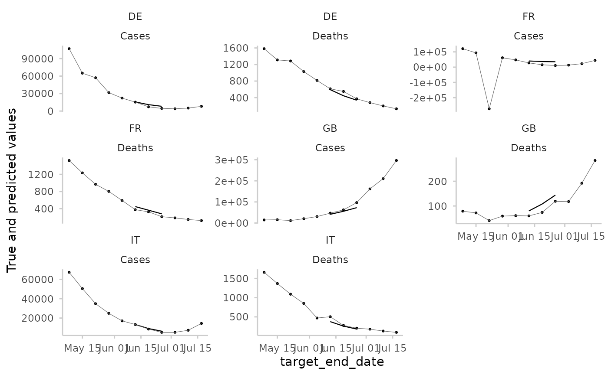
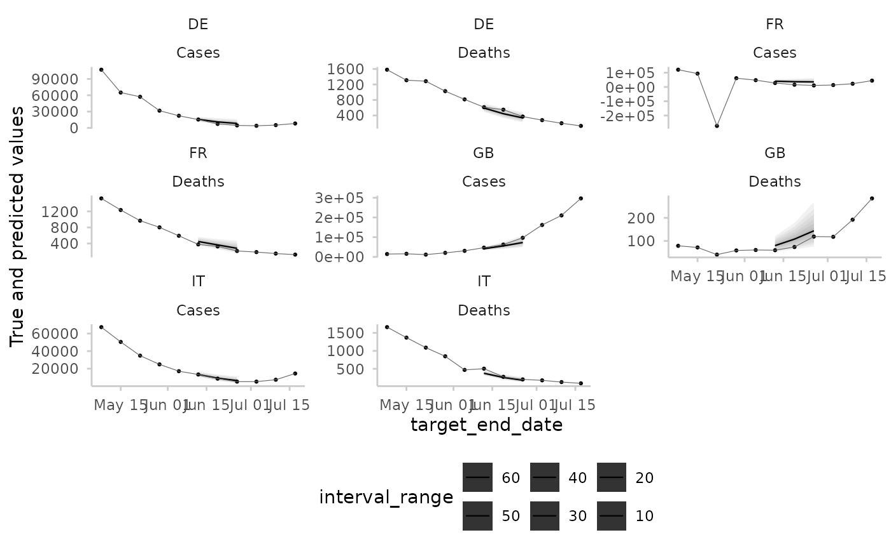
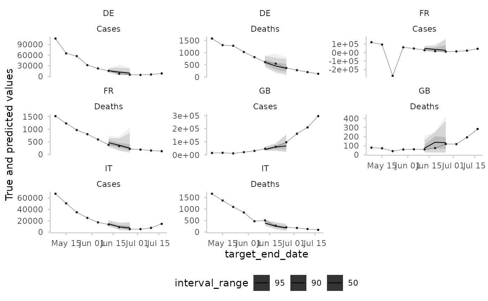
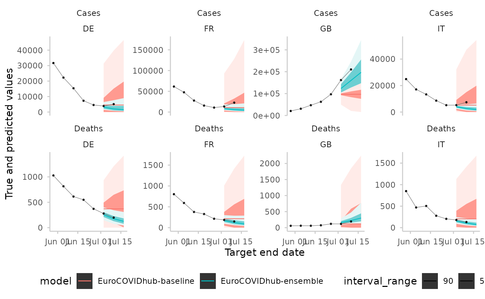
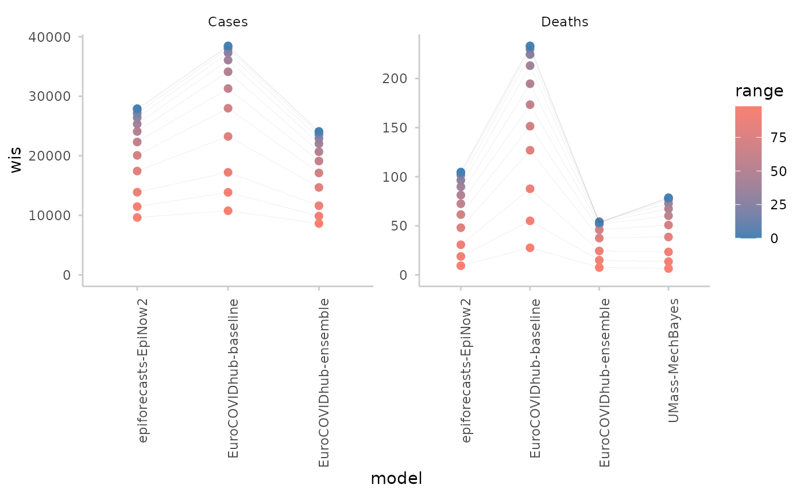
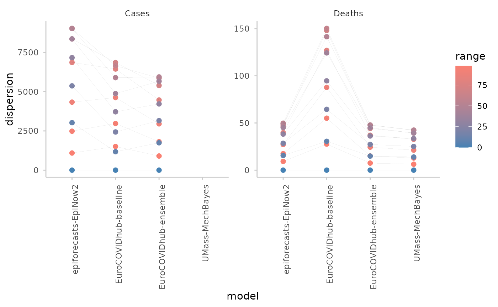
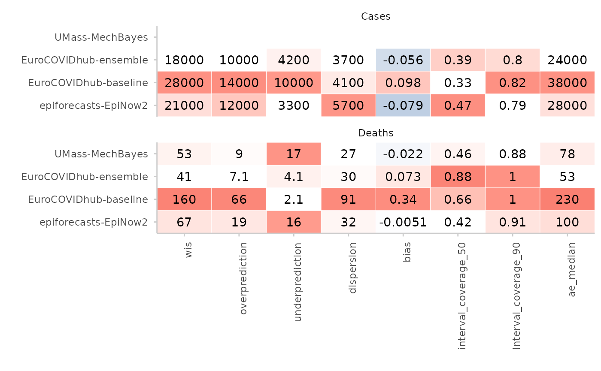
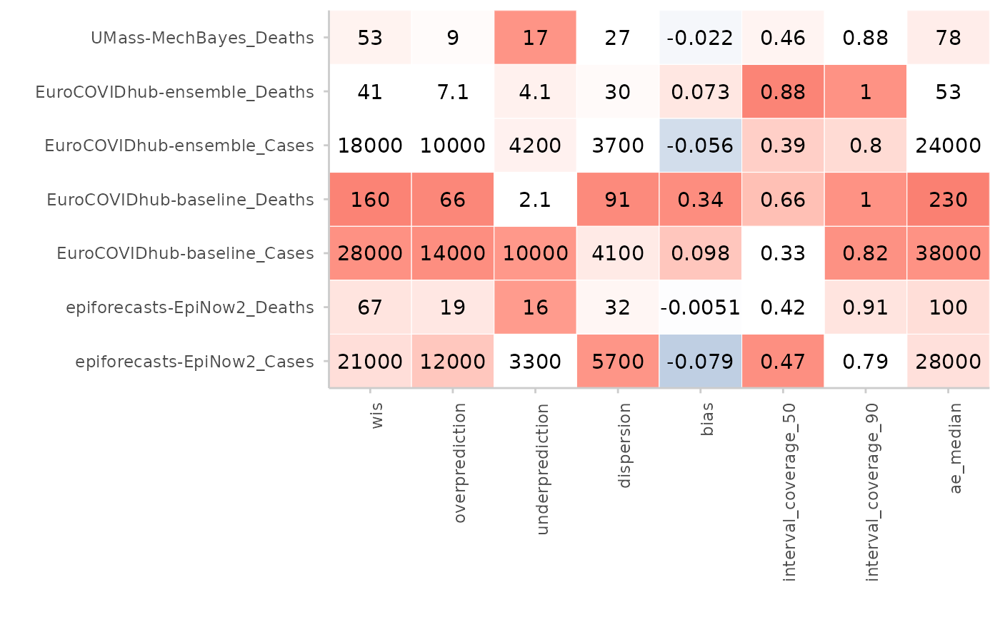

Deprecated Visualisations
Source:vignettes/Deprecated-visualisations.Rmd
Deprecated-visualisations.RmdThis Vignette provides the code for visualisations that were
previously part of scoringutils but have been removed with
scoringutils version 2.0.
The example data used is the data shipped with the
scoringutils package. It consists of short-term forecasts
of COVID-19 cases and deaths for several European countries, submitted
to the European COVID-19 Forecast Hub. Every week, forecasters submitted
1 to 4 week ahead forecasts (the “forecast horizon”, here restricted to
1 to 3 week ahead). The dates for which a forecast was made are called
target_end_date. See e.g. ?example_quantile
for more information.
library(scoringutils)
library(data.table)
library(ggplot2)
library(ggdist)
library(magrittr)
library(magrittr) #pipe operatorFunctions plot_predictions() and
make_na()
In previous versions of scoringutils, forecasts and
observed values could be visualised using the function
plot_predictions() and its make_na() helper
function. The following shows the function code first and then an
example.
#" @title Plot Predictions vs True Values
#"
#" @description
#" Make a plot of observed and predicted values
#"
#" @param data a data.frame that follows the same specifications outlined in
#" [score()]. To customise your plotting, you can filter your data using the
#" function [make_NA()].
#" @param by character vector with column names that denote categories by which
#" the plot should be stratified. If for example you want to have a facetted
#" plot, this should be a character vector with the columns used in facetting
#" (note that the facetting still needs to be done outside of the function call)
#" @param x character vector of length one that denotes the name of the variable
#" @param interval_range numeric vector indicating the interval ranges to plot.
#" If 0 is included in `interval_range`, the median prediction will be shown.
#" @return ggplot object with a plot of true vs predicted values
#" @importFrom ggplot2 ggplot scale_colour_manual scale_fill_manual theme_light
#" @importFrom ggplot2 facet_wrap facet_grid aes geom_line .data geom_point
#" @importFrom data.table dcast
#" @importFrom ggdist geom_lineribbon
#" @export
#" @examples
#" library(ggplot2)
#" library(magrittr)
#"
#" example_continuous %>%
#" make_NA (
#" what = "truth",
#" target_end_date >= "2021-07-22",
#" target_end_date < "2021-05-01"
#" ) %>%
#" make_NA (
#" what = "forecast",
#" model != "EuroCOVIDhub-ensemble",
#" forecast_date != "2021-06-07"
#" ) %>%
#" plot_predictions (
#" x = "target_end_date",
#" by = c("target_type", "location"),
#" interval_range = c(0, 50, 90, 95)
#" ) +
#" facet_wrap(~ location + target_type, scales = "free_y") +
#" aes(fill = model, color = model)
#"
#" example_continuous %>%
#" make_NA (
#" what = "truth",
#" target_end_date >= "2021-07-22",
#" target_end_date < "2021-05-01"
#" ) %>%
#" make_NA (
#" what = "forecast",
#" forecast_date != "2021-06-07"
#" ) %>%
#" plot_predictions (
#" x = "target_end_date",
#" by = c("target_type", "location"),
#" interval_range = 0
#" ) +
#" facet_wrap(~ location + target_type, scales = "free_y") +
#" aes(fill = model, color = model)
plot_predictions <- function(data,
by = NULL,
x = "date",
interval_range = c(0, 50, 90)) {
# split truth data and forecasts in order to apply different filtering
truth_data <- data.table::as.data.table(data)[!is.na(observed)]
forecasts <- data.table::as.data.table(data)[!is.na(predicted)]
del_cols <-
colnames(truth_data)[!(colnames(truth_data) %in% c(by, "observed", x))]
truth_data <- unique(suppressWarnings(truth_data[, eval(del_cols) := NULL]))
# find out what type of predictions we have. convert sample based to
# interval range data
if (get_forecast_type(data) == "quantile") {
forecasts <- quantile_to_interval(
forecasts,
keep_quantile_col = FALSE
)
} else if (get_forecast_type(data) == "sample") {
# using a scoringutils internal function
forecasts <- scoringutils:::sample_to_interval_long(
as_forecast(forecasts),
interval_range = interval_range,
keep_quantile_col = FALSE
)
}
# select appropriate boundaries and pivot wider
select <- forecasts$interval_range %in% setdiff(interval_range, 0)
intervals <- forecasts[select, ]
# delete quantile column in intervals if present. This is important for
# pivoting
if ("quantile_level" %in% names(intervals)) {
intervals[, quantile_level := NULL]
}
plot <- ggplot(data = data, aes(x = .data[[x]])) +
theme_scoringutils() +
ylab("True and predicted values")
if (nrow(intervals) != 0) {
# pivot wider and convert range to a factor
intervals <- data.table::dcast(intervals, ... ~ boundary,
value.var = "predicted")
# only plot interval ranges if there are interval ranges to plot
plot <- plot +
ggdist::geom_lineribbon(
data = intervals,
aes(
ymin = lower, ymax = upper,
# We use the fill_ramp aesthetic for this instead of the default fill
# because we want to keep fill to be able to use it for other
# variables
fill_ramp = factor(
interval_range,
levels = sort(unique(interval_range), decreasing = TRUE)
)
),
lwd = 0.4
) +
ggdist::scale_fill_ramp_discrete(
name = "interval_range",
# range argument was added to make sure that the line for the median
# and the ribbon don"t have the same opacity, making the line
# invisible
range = c(0.15, 0.75)
)
}
# We could treat this step as part of ggdist::geom_lineribbon() but we treat
# it separately here to deal with the case when only the median is provided
# (in which case ggdist::geom_lineribbon() will fail)
if (0 %in% interval_range) {
select_median <-
forecasts$interval_range == 0 & forecasts$boundary == "lower"
median <- forecasts[select_median]
if (nrow(median) > 0) {
plot <- plot +
geom_line(
data = median,
mapping = aes(y = predicted),
lwd = 0.4
)
}
}
# add observed values
if (nrow(truth_data) > 0) {
plot <- plot +
geom_point(
data = truth_data,
show.legend = FALSE,
inherit.aes = FALSE,
aes(x = .data[[x]], y = observed),
color = "black",
size = 0.5
) +
geom_line(
data = truth_data,
inherit.aes = FALSE,
show.legend = FALSE,
aes(x = .data[[x]], y = observed),
linetype = 1,
color = "grey40",
lwd = 0.2
)
}
return(plot)
}plot_predictions() does the actual work of producing a
plot. The by argument is needed so that the user can facet
the plot correctly and the user needs to specify all columns relevant
for facetting. make_NA() represents a form of filtering,
but instead of filtering entire rows, the relevant entries in the
columns “predicted” or “observed” are made NA. This allows
the user to filter observations and forecasts independently.
#" @title Make Rows NA in Data for Plotting
#"
#" @description
#" Filters the data and turns values into `NA` before the data gets passed to
#" [plot_predictions()]. The reason to do this is to this is that it allows to
#" "filter" prediction and truth data separately. Any value that is NA will then
#" be removed in the subsequent call to [plot_predictions()].
#"
#" @inheritParams score
#" @param what character vector that determines which values should be turned
#" into `NA`. If `what = "truth"`, values in the column "observed" will be
#" turned into `NA`. If `what = "forecast"`, values in the column "prediction"
#" will be turned into `NA`. If `what = "both"`, values in both column will be
#" turned into `NA`.
#" @param ... logical statements used to filter the data
#" @return A data.table
#" @importFrom rlang enexprs
#" @keywords plotting
#" @export
#"
#" @examples
#" make_NA (
#" example_continuous,
#" what = "truth",
#" target_end_date >= "2021-07-22",
#" target_end_date < "2021-05-01"
#" )
make_NA <- function(data = NULL,
what = c("truth", "forecast", "both"),
...) {
stopifnot(is.data.frame(data))
data <- as.data.table(data)
what <- match.arg(what)
# turn ... arguments into expressions
args <- enexprs(...)
vars <- NULL
if (what %in% c("forecast", "both")) {
vars <- c(vars, "predicted")
}
if (what %in% c("truth", "both")) {
vars <- c(vars, "observed")
}
for (expr in args) {
data <- data[eval(expr), eval(vars) := NA_real_]
}
return(data[])
}In the following are a few examples of using the two functions to create a plot using the scoringutils example data.
Visualising the median forecasts for the example data. The truth data
is restricted to a period between 2021-05-01 and 2021-07-22. The
forecast data is a forecast from the model “EuroCOVIDhub-ensemble” made
on the “2021-06-07”. All other data is set to NA,
effectively removing it from the plot.
median_forecasts <- example_quantile[quantile_level == 0.5]
median_forecasts %>%
make_NA(what = "truth",
target_end_date <= "2021-05-01",
target_end_date > "2021-07-22") %>%
make_NA(what = "forecast",
model != "EuroCOVIDhub-ensemble",
forecast_date != "2021-06-07") %>%
plot_predictions(
by = c("location", "target_type"),
x = "target_end_date"
) +
facet_wrap(location ~ target_type, scales = "free_y")
This is the same plot, but with a variety of prediction intervals shown, instead of just the median.
example_quantile %>%
make_NA(what = "truth",
target_end_date <= "2021-05-01",
target_end_date > "2021-07-22") %>%
make_NA(what = "forecast",
model != "EuroCOVIDhub-ensemble",
forecast_date != "2021-06-07") %>%
plot_predictions(
by = c("location", "target_type"),
x = "target_end_date",
interval_range = c(0, 10, 20, 30, 40, 50, 60)
) +
facet_wrap(location ~ target_type, scales = "free_y")
And a similar plot, this time based on continuous forecasts. The predictions are automatically converted to a quantile-based forecasts for plotting.
example_continuous %>%
make_NA(what = "truth",
target_end_date <= "2021-05-01",
target_end_date > "2021-07-22") %>%
make_NA(what = "forecast",
model != "EuroCOVIDhub-ensemble",
forecast_date != "2021-06-07") %>%
plot_predictions(
by = c("location", "target_type"),
x = "target_end_date",
interval_range = c(0, 50, 90, 95)
) +
facet_wrap(location ~ target_type, scales = "free_y")
Displaying two forecasts at a time with additional colours:
example_quantile %>%
make_NA(what = "truth",
target_end_date > "2021-07-15",
target_end_date <= "2021-05-22") %>%
make_NA(what = "forecast",
!(model %in% c("EuroCOVIDhub-ensemble", "EuroCOVIDhub-baseline")),
forecast_date != "2021-06-28") %>%
plot_predictions(x = "target_end_date", by = c("target_type", "location")) +
aes(colour = model, fill = model) +
facet_wrap(target_type ~ location, ncol = 4, scales = "free_y") +
labs(x = "Target end date")
Function plot_interval_ranges() (formerly
plot_ranges())
#" @title Plot Metrics by Range of the Prediction Interval
#"
#" @description
#" Visualise the metrics by range, e.g. if you are interested how different
#" interval ranges contribute to the overall interval score, or how
#" sharpness / dispersion changes by range.
#"
#" @param scores A data.frame of scores based on quantile forecasts as
#" produced by [score()] or [summarise_scores()]. Note that "range" must be included
#" in the `by` argument when running [summarise_scores()]
#" @param y The variable from the scores you want to show on the y-Axis.
#" This could be something like "wis" (the default) or "dispersion"
#" @param x The variable from the scores you want to show on the x-Axis.
#" Usually this will be "model"
#" @param colour Character vector of length one used to determine a variable
#" for colouring dots. The Default is "range".
#" @return A ggplot2 object showing a contributions from the three components of
#" the weighted interval score
#" @importFrom ggplot2 ggplot aes aes geom_point geom_line
#" expand_limits theme theme_light element_text scale_color_continuous labs
#" @export
#" @examples
#" library(ggplot2)
#" ex <- data.table::copy(example_quantile)
#" ex$range <- scoringutils:::get_range_from_quantile(ex$quantile)
#" scores <- suppressWarnings(score(as_forecast(ex), metrics = list("wis" = wis)))
#" summarised <- summarise_scores(
#" scores,
#" by = c("model", "target_type", "range")
#" )
#" plot_interval_ranges(summarised, x = "model") +
#" facet_wrap(~target_type, scales = "free")
plot_interval_ranges <- function(scores,
y = "wis",
x = "model",
colour = "range") {
plot <- ggplot(
scores,
aes(
x = .data[[x]],
y = .data[[y]],
colour = .data[[colour]]
)
) +
geom_point(size = 2) +
geom_line(aes(group = range),
colour = "black",
linewidth = 0.01
) +
scale_color_continuous(low = "steelblue", high = "salmon") +
theme_scoringutils() +
expand_limits(y = 0) +
theme(
legend.position = "right",
axis.text.x = element_text(
angle = 90, vjust = 1,
hjust = 1
)
)
return(plot)
}The functionality currently relies on a hack. In previous versions of
scoringutils, scores were computed per interval range/per
quantile. Now, scoringutils returns one score per forecast,
not per interval range/quantile. We therefore need to add a
range column, using an internal function
get_range_from_quantile(). This column will be interpreted
as one that defines the unit of a single forecast by
scoringutils. It also means that we will get a warning
about different number of quantile levels for different forecasts
(because the 0% prediction interval only has one median forecast, while
all other prediction intervals have two (a lower and an upper
bound)).
range_example <- copy(example_quantile) %>%
na.omit() %>%
.[, range := scoringutils:::get_range_from_quantile(quantile_level)]
sum_scores <- range_example %>%
as_forecast() %>%
score(metrics = list(wis = wis, dispersion = dispersion)) %>%
summarise_scores(by = c("model", "target_type", "range")) %>%
suppressWarnings()
plot_interval_ranges(sum_scores, x = "model") +
facet_wrap(~target_type, scales = "free")
Plotting dispersion instead of WIS:
plot_interval_ranges(sum_scores, y = "dispersion", x = "model") +
facet_wrap(~target_type, scales = "free_y")
Function plot_score_table()
This function allowed users to turn a table of (summarised) scores into a coloured table. The function had hard-coded information about what colour scale to pick for each metric. With scoringutils 2.0.0, we allowed users to assign their own names to metrics or use custom scoring functions. If you only stick to the default names provided by scoringutils, the function should still work. However, the functionality is not easily generalisable, so we decided to deprecate the function.
#' @title Plot Coloured Score Table
#'
#' @description
#' Plots a coloured table of summarised scores obtained using
#' [score()].
#'
#' @param y the variable to be shown on the y-axis. Instead of a single character string,
#' you can also specify a vector with column names, e.g.
#' `y = c("model", "location")`. These column names will be concatenated
#' to create a unique row identifier (e.g. "model1_location1").
#' @param by A character vector that determines how the colour shading for the
#' plot gets computed. By default (`NULL`), shading will be determined per
#' metric, but you can provide additional column names (see examples).
#' @param metrics A character vector with the metrics to show. If set to
#' `NULL` (default), all metrics present in `scores` will be shown.
#'
#' @return A ggplot object with a coloured table of summarised scores
#' @inheritParams get_pairwise_comparisons
#' @importFrom ggplot2 ggplot aes element_blank element_text labs coord_cartesian coord_flip
#' @importFrom data.table setDT melt
#' @importFrom stats sd
#' @export
#'
#' @examples
#' library(ggplot2)
#' library(magrittr) # pipe operator
#' \dontshow{
#' data.table::setDTthreads(2) # restricts number of cores used on CRAN
#' }
#'
#' scores <- score(as_forecast(example_quantile)) %>%
#' summarise_scores(by = c("model", "target_type")) %>%
#' summarise_scores(by = c("model", "target_type"), fun = signif, digits = 2)
#'
#' plot_score_table(scores, y = "model", by = "target_type") +
#' facet_wrap(~target_type, ncol = 1)
#'
#' # can also put target description on the y-axis
#' plot_score_table(scores,
#' y = c("model", "target_type"),
#' by = "target_type")
plot_score_table <- function(scores,
y = "model",
by = NULL,
metrics = NULL) {
# identify metrics -----------------------------------------------------------
id_vars <- get_forecast_unit(scores)
metrics <- get_metrics(scores)
cols_to_delete <- names(scores)[!(names(scores) %in% c(metrics, id_vars))]
suppressWarnings(scores[, eval(cols_to_delete) := NULL])
# compute scaled values ------------------------------------------------------
# scaling is done in order to colour the different scores
# for most metrics larger is worse, but others like bias are better if they
# are close to zero and deviations in both directions are bad
# define which metrics are scaled using min (larger is worse) and
# which not (metrics like bias where deviations in both directions are bad)
metrics_zero_good <- c("bias", "interval_coverage_deviation")
metrics_no_color <- "coverage"
metrics_min_good <- setdiff(metrics, c(
metrics_zero_good, metrics_no_color
))
# write scale functions that can be used in data.table
scale <- function(x) {
scaled <- x / sd(x, na.rm = TRUE)
return(scaled)
}
scale_min_good <- function(x) {
scaled <- (x - min(x)) / sd(x, na.rm = TRUE)
return(scaled)
}
# pivot longer and add scaled values
df <- data.table::melt(scores,
value.vars = metrics,
id.vars = id_vars,
variable.name = "metric"
)
df[metric %in% metrics_min_good, value_scaled := scale_min_good(value),
by = c("metric", by)
]
df[metric %in% metrics_zero_good, value_scaled := scale(value),
by = c("metric", by)
]
df[metric %in% metrics_no_color, value_scaled := 0,
by = c("metric", by)
]
# create identifier column for plot ------------------------------------------
# if there is only one column, leave column as is. Reason to do that is that
# users can then pass in a factor and keep the ordering of that column intact
if (length(y) > 1) {
df[, identifCol := do.call(paste, c(.SD, sep = "_")),
.SDcols = y[y %in% names(df)]]
} else {
setnames(df, old = eval(y), new = "identifCol")
}
# plot -----------------------------------------------------------------------
# make plot with all metrics that are not NA
plot <- ggplot(
df[!is.na(value), ],
aes(y = identifCol, x = metric)
) +
geom_tile(aes(fill = value_scaled), colour = "white", show.legend = FALSE) +
geom_text(aes(y = identifCol, label = value)) +
scale_fill_gradient2(low = "steelblue", high = "salmon") +
theme_scoringutils() +
theme(
legend.title = element_blank(),
legend.position = "none",
axis.text.x = element_text(
angle = 90, vjust = 1,
hjust = 1
)
) +
labs(x = "", y = "") +
coord_cartesian(expand = FALSE)
return(plot)
}The main functionality the old function provided, was scaling the
scores in order to obtain reasonable colour shades. It would do this per
metric, but one could also pass in additional grouping variables through
the by argument. This allowed users to achieve a faceting
of the table (note that of course scores also needed to be summarised
according to the same grouping).
scores <- score(as_forecast(example_quantile)) %>%
summarise_scores(by = c("model", "target_type")) %>%
summarise_scores(by = c("model", "target_type"), fun = signif, digits = 2)
#> ℹ Some rows containing NA values may be removed. This is fine if not
#> unexpected.
plot_score_table(scores, y = "model", by = "target_type") +
facet_wrap(~target_type, ncol = 1)
The function also allowed users to combine different facets into one,
by creating a combined y-variable. This was done by passing a vector of
column names to the y argument.
# can also put target description on the y-axis
plot_score_table(scores,
y = c("model", "target_type"),
by = "target_type")